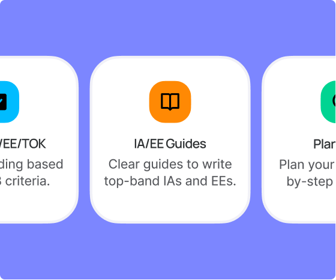
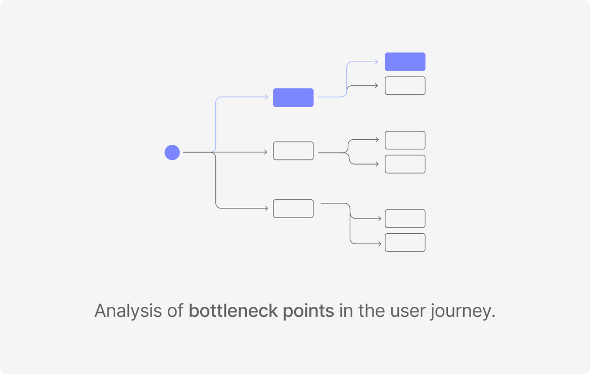
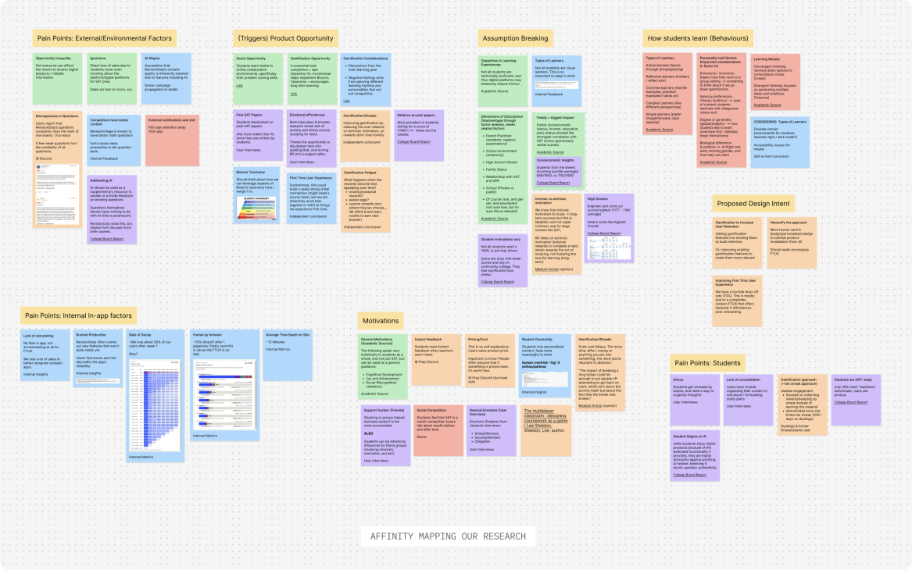
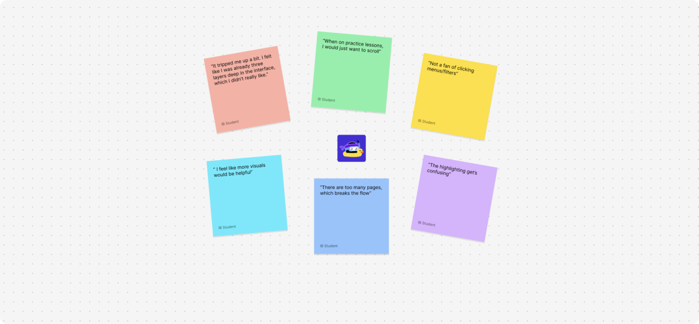
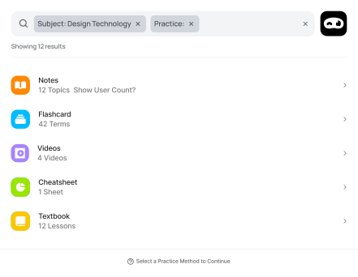
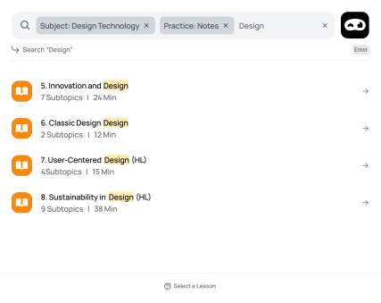

RevisionDojo
Timeline
Sept – Dec 2025
Role
UX Researcher + Designer
Team
- Caleb Wu
- Amy Zhao
- Jolly Liu
- Jessica Chan
Skills
- User Research
- Product Design
- Interaction Design
How we can support RevisionDojo's rapid user growth?
RevisionDojo is the fastest-growing ed-tech startup serving 400,000+ users, focused on supporting IB and SAT students.
My team and I developed a scalable navigation system to help users navigate the product as it continues to scale.

RevisionDojo has 500+ features, but no clear way to surface them...
As an ed-tech tool, RevisionDojo launches 7+ features per month. However, it lacks the infrastructure to sustain this fast-paced growth, causing new features and content to get buried in an increasingly crowded navigation bar.
"Help IB students surface the right content at the right time"

10%
of the website is fully being utilized by users
85%
of students arrive with a specific goal in mind
70%
of users drop off the website after the first week
An omnidirectional search bar.
A search bar modal that lives on any page of the app, enabling students to navigate RevisionDojo while effectively surfacing the features and content they are looking for.
Walk-through video of the omnidirectional search bar solution.
Researching user painpoints.
To clear my own assumptions, I affinity mapped all our user research to understand why users dropped off and the study habits of IB and SAT students.

Validated our navigation system through user testing.
I ran usability tests with six former IB students, including some familiar with RevisionDojo. The user test explored how users navigated the interface, why they made certain choices, and whether they would use the tool.
To gather further insights, I ran A/B usability tests: one group completed structured tasks, while the other explored freely, using the same guiding questions throughout.

User tests surfaced key pain points, including support for syllabus acronyms, clearer result highlighting, and better filters for error states.
Filtered searches for faster navigation.
Users can filter by subject, practice type, and topic, improving navigation and enhancing discoverability.

Highlighting keywords for clearer search results.
To help distinguish between multiple topics containing the same words, highlighted words appear as the user types, filtering the best match to the top.

Good design isn't always new; it's what works.
You don't always have to reinvent the wheel to solve a problem; sometimes the best approach is to build on what already works. After weeks of research and product development, I learned that the simplest solutions are often the most effective.
Keep testing and testing and testing again.
User testing is a designer's best friend. Testing our solution helped us validate all our assumptions and fill the knowledge gaps that secondary research couldn't address.